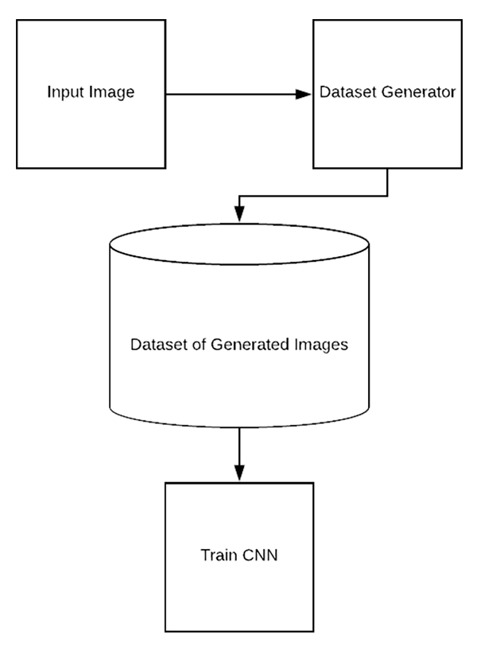
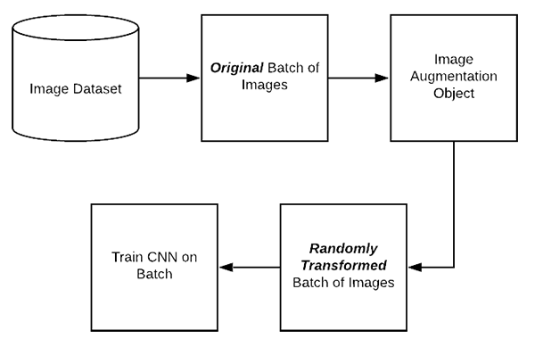

Keras ImageDataGenerator & Data Augmentation
1. The Keras ImageDataGenerator class is not an “additive” operation. Instead, the ImageDataGenerator class accepts the original data, randomly transforms it, and returns only the NEW, transformed data.
2. There are three types of data augmentation while training deep neural networks:
a. Dataset generator and data expansion via data augmentation. (less common)

Process:
Load the original input image from disk.
Randomly transform the original image via a series of random translations, rotations, etc.
Take the transformed image and write it back out to disk.
Repeat steps 2 and 3 a total of N times.
A problem of this approach – we haven’t exactly increased the ability of our model to generalize. Our neural network is only as good as the data it was trained on. we cannot expect to train a NN on a small amount of data and the expect it to generalize to data it was never trained on and has never seen before.
A better method – gather additional data or look into methods of behavioral cloning. (and then applying the type of data augmentation covered in the “Combining data generation and in-place augmentation”.)
b. In-place/on-the-fly data augmentation. (most common)

This type of data augmentation is what Keras’ ImageDataGenerator class implements.
Process:
- An input batch of images is presented to the ImageDataGenerator.
- The ImageDataGenerator transforms each image in the batch by a series of random translations, rotations, etc.
- The randomly transformed batch is then returned to the calling function.
Two important points:
- The ImageDataGenerator is not returning both the original data and the transformed data — the class only returns the randomly transformed data.
- We call this “in-place” and “on-the-fly” data augmentation because this augmentation is done at training time (i.e., we are not generating these examples ahead of time/prior to training).
c. Combining dataset generation and in-place augmentation.
The final type of data augmentation seeks to combine both dataset generation and in-place augmentation — you may see this type of data augmentation when performing behavioral cloning (like using games and car driving simulators to create training datasets for self-driving.).
Type 1 Implementation
1 | # import the necessary packages |
Type 2 Implementation:
1 | # set the matplotlib backend so figures can be saved in the background |
- Blog Link: http://songjingrui.github.io/2019/11/09/Keras-ImageDataGenerator-Data-Augmentation/
- Copyright Declaration: The author owns the copyright, please indicate the source reproduced.